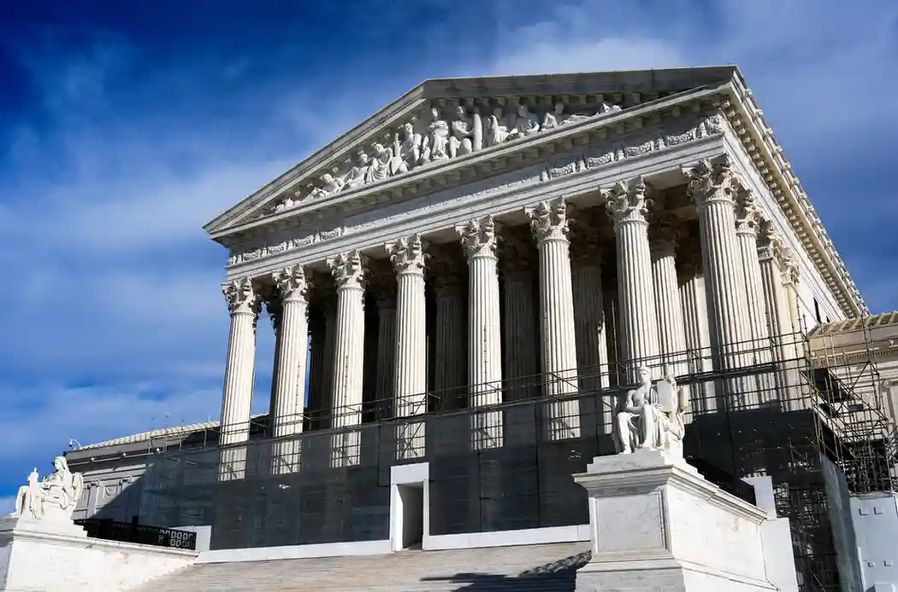
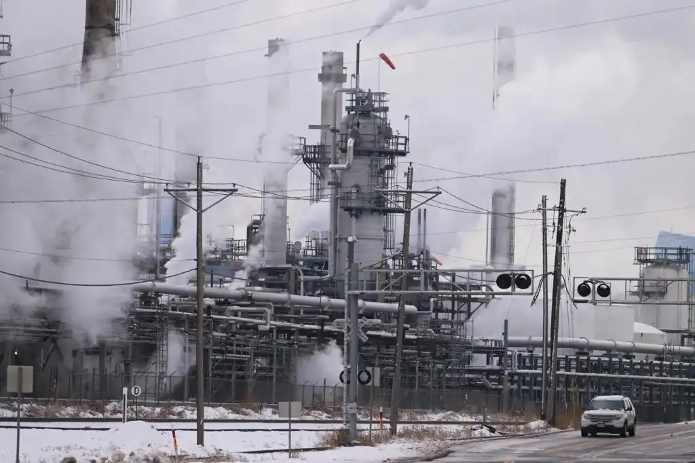
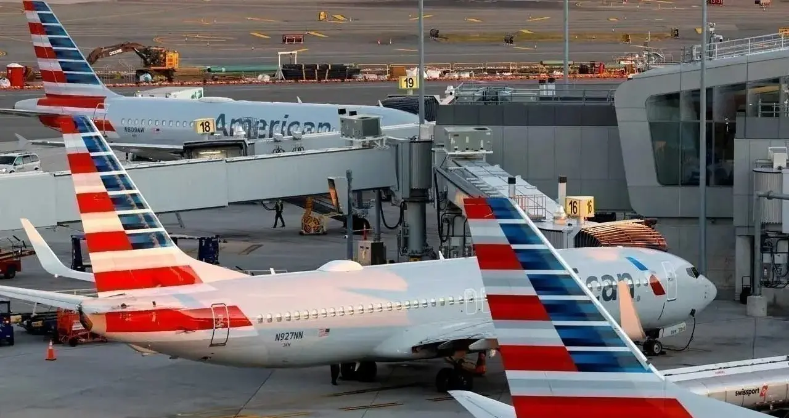
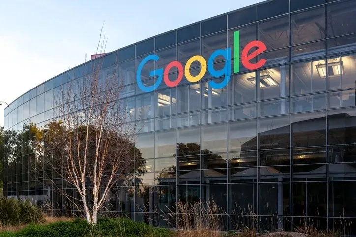

Supreme Court Steps In as Oil Giants Fight to Block Climate Liability Cases



WASHINGTON — The United States Supreme Court announced Monday that it would take up a legal challenge brought by two of the world's largest oil and gas producers, who are seeking to prevent state courts from hearing lawsuits that hold the fossil fuel industry responsible for billions of dollars in climate-related destruction. The decision to accept the case marks a significant moment in a years-long legal tug of war between energy companies, local communities, and environmental advocates.
The case originates in Boulder County, Colorado, where local officials filed a lawsuit alleging that major energy producers knowingly misled the public for decades about the role their products played in accelerating climate change. Boulder is one of a growing number of jurisdictions across the United States that have pursued litigation against the oil and gas sector, arguing that the financial cost of dealing with climate-related disasters — including wildfires, coastal flooding, and destructive storms — should not rest entirely on the shoulders of ordinary taxpayers.
The two companies at the centre of the Supreme Court case, Suncor Energy and ExxonMobil, appealed after Colorado's state supreme court allowed the Boulder lawsuit to move forward. Both companies argue that matters involving greenhouse gas emissions are inherently national in scope and should be decided in federal courts, where similar climate liability cases have previously been thrown out. By allowing state courts to handle such claims, the companies warn, the legal system could end up reaching outcomes that effectively punish entire industries for activities that are federally regulated and globally distributed.
"Using state law to regulate the global effects of climate change poses a genuine threat to one of the most strategically important sectors in the American economy," attorneys for the companies wrote in their filing. ExxonMobil added in a separate statement that environmental and energy policy decisions of this magnitude should not be shaped through a patchwork of individual state court proceedings.
The Trump administration also weighed in, filing a brief that sided with the oil companies and urged the justices to overturn the Colorado Supreme Court ruling. Administration officials argued that allowing state-level climate lawsuits to proceed would create an unworkable legal situation in which virtually any local government anywhere in the country could bring suit against any company or individual around the world for contributing, however indirectly, to rising global temperatures. President Trump, a vocal critic of climate litigation, had already taken aim at such lawsuits in a formal executive order, and the Justice Department had previously attempted to block several of them at earlier stages.
Legal observers say the Supreme Court's decision to hear the case is itself significant, as the justices have historically been selective about which climate-related disputes they choose to wade into. The conservative majority on the current court has shown a willingness to limit the scope of federal environmental regulation, and legal analysts are closely watching how the justices will handle the question of whether state courts are appropriate venues for claims tied to planet-wide phenomena like climate change.

What the Boulder Case Could Mean for Climate Litigation Nationwide
Boulder's legal team argued against removing the case to federal court at an earlier stage of the proceedings, maintaining that the litigation is still in its preliminary phases and should remain in the state court system where it was originally filed. Their attorneys wrote that there is no constitutional principle that prevents states from addressing harms that occur within their borders simply because those harms may have been caused or contributed to by activities happening elsewhere. They drew parallels to other product liability cases — such as those involving defective vehicles or dangerous building materials — where out-of-state conduct causing in-state harm has long been handled through the state court system.
Jonathan Koehn, Boulder's director of climate initiatives, framed the case in direct human terms. The city, he said, is already dealing with the very real and very expensive consequences of a warming planet — more intense wildfires in surrounding mountain areas, reduced snowpack affecting water supplies, and increasingly volatile weather patterns that stretch the capacity of emergency services. "Our case is, at its core, about who should bear the cost of that reality," Koehn said. "It should not be local taxpayers alone."
The Boulder case is far from isolated. Governments in California, Hawaii, New Jersey, and elsewhere have filed comparable lawsuits, as have a number of municipalities internationally. Collectively, these cases represent a legal strategy that has gained momentum over the past decade, driven partly by the emergence of internal corporate documents suggesting that major energy companies were aware — far earlier than they publicly acknowledged — that burning fossil fuels would cause significant long-term damage to the climate.
Some of these lawsuits have already been dismissed, particularly in federal courts, where judges have found that federal law preempts state-level claims on questions of emissions and environmental regulation. Others continue to move through state court systems, and the outcome of the Boulder case at the Supreme Court level is expected to have far-reaching implications for whether any of them can ultimately survive legal challenge.
The Supreme Court also indicated it wants both sides to address a threshold procedural question: whether the case has reached a sufficiently advanced stage to warrant review by the nation's highest court at this point in time, or whether it is premature for the justices to step in before the lower courts have fully developed the factual record. Oral arguments in the case are expected to be scheduled for the autumn term.
For communities on the front lines of climate disruption, the case represents something more than a legal technicality. In Boulder, city officials have already allocated millions of dollars toward flood management, wildfire resilience programmes, and infrastructure upgrades designed to withstand more extreme weather conditions. Local leaders say those costs are direct consequences of pollution that their residents did not cause and from which large corporate interests profited enormously over many decades.
The broader tension at the heart of the case reflects a question that courts, legislatures, and policymakers around the world are increasingly being asked to answer: when the economic activity of a specific industry contributes measurably to a global crisis, who bears legal responsibility, and in which forum should that responsibility be determined?
Environmental law experts note that the Supreme Court's conservative majority has previously shown reluctance to allow expansive regulatory interpretations that extend government authority into new economic areas. That track record leads many legal scholars to anticipate that the justices may ultimately side with the companies on the federal versus state court question, though few are willing to predict the outcome with certainty given the complexity and novelty of the legal issues involved.
Whatever the court ultimately decides, the ruling is expected to reshape the legal landscape for climate accountability litigation in the United States for years to come. If the justices rule in favour of the oil companies, dozens of state and local governments may find their climate lawsuits effectively extinguished. If the court allows the cases to proceed in state courts, it could open the door to an expansive new wave of litigation and, potentially, massive financial judgments against some of the world's most profitable corporations.
Both sides say they are prepared to argue their positions before the court. For Boulder and its coalition of allied governments, the case represents a last legal avenue for forcing the energy industry to contribute financially to the enormous task of adapting communities to the climate disruptions that scientists have directly linked to decades of fossil fuel consumption. For Suncor, ExxonMobil, and their industry allies, prevailing at the Supreme Court would provide significant legal protection and potentially end the most serious existential litigation threat the sector has faced in a generation.


Koepka’s Leap of Faith: What Comes Next After LIV Golf Exit
DECEMBER 24, 2025

Skenes and Skubal Win Cy Young Awards as Future Uncertainty Grows
NOVEMBER 12, 2025


Business

Flight Cuts From Funding Standoff Strain U.S. Supply Chain
A federal funding standoff is forcing U.S. airports to cut flights, worsening FAA staffing shortages and creating new delays across the supply chain.
BUSINESS BY NOVEMBER 9, 2025

U.S. Retailers Expect Record Holiday Sales as NRF Forecasts First-Ever $1 Trillion Season
The National Retail Federation says that holiday sales will reach a record $1 trillion this year because eager shoppers are taking advantage of early discounts and strong consumer demand.
BUSINESS BY NOVEMBER 7, 2025

Google Unveils Major Investment in Germany: Data Centers & Renewable Energy
Google LLC is about to announce its biggest investment in Germany to date, focused on data centers, infrastructure, and renewable energy projects.
BUSINESS BY NOVEMBER 6, 2025